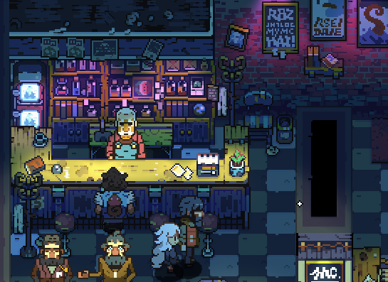
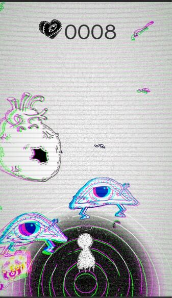
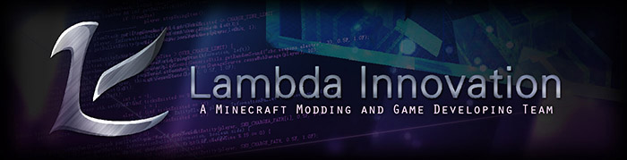
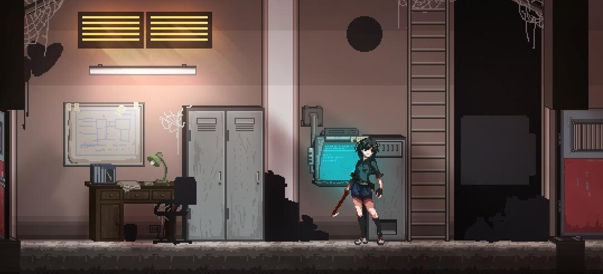
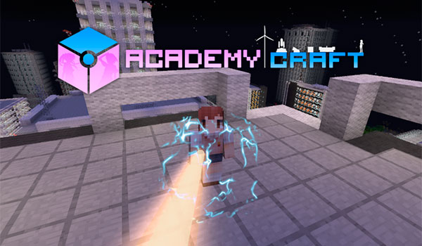
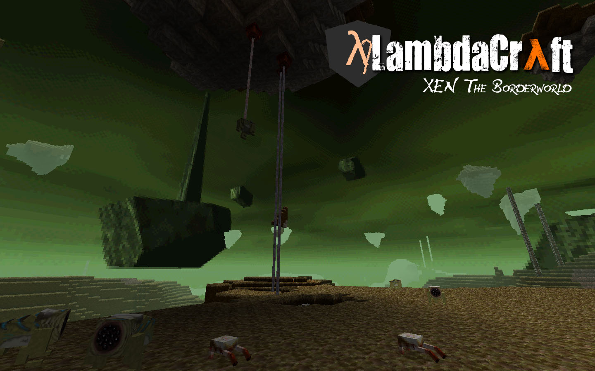

-
- 基本信息
- 个人信息: 周俊辰 / 男
- 常用ID: WeAthFolD
- 博客: weathfold.github.io
- GitHub: www.github.com/weathfold
-
- 教育
华中科技大学 2014.9 - 2018.6 (本科)
- 计算机科学与技术
-
- 项目与工作经验
Pixpil Studio（2017.9 - 至今） 实习
-
Eastward
负责 2D 像素风格 Zelda-Like RPG 游戏 Eastward 的游戏玩法设计和关卡设计。
基于工作室的自研引擎 gii，使用 lua 进行游戏逻辑开发。接触包括AI编程、玩法设计和实现、关卡设计、引擎工具链维护等工作。

冰岩作坊 （2014.10 - 至今） 学生活动 游戏组/程序组
-
PurEgogithub.com/weathfold/PurEgo
2017 年 Global Gam Jam 的提交作品，是一个以“波”为主题的音乐节奏游戏。
负责 Unity 开发，使用 Post Processing 实现了多种特效。
 -
报告菌report.hustonline.net
负责后端开发工作，使用 Scala 和 Play Framework 实现服务器后端。
-
Rebelliousgithub.com/weathfold/Rebellious
负责 Unity 开发，是一个手机端的科技风格无限跑酷游戏。
Lambda Innovation （2013.5 - 至今） 线上社团
-
Cocoon（制作中）
一个像素风格的2D横版平台类动作游戏。该游戏在一个虚构的城市中展开，力图还原真实的跑酷体验，并和传统的动作游戏机制结合。
我在该项目中担任部分的游戏设计以及 Unity 开发。
 -
AcademyCraftac.li-dev.cn
以超能力为主题的 Minecraft（我的世界）模组。我提出了项目并且担任项目主管和主程序。
本 Mod 在 Minecraft 内提供了一个完整的超能力升级游玩体系。国内外总下载量超过100万，为 mcbbs 上点击评论数最多的 mod。
项目制作过程中实现包括 C/S 技能状态同步框架、各种技能特效的渲染、可视化 GUI 编辑器等内容。尝试 Java 和 Scala 混编项目，总代码量 50k 左右。
 -
LambdaCraftgithub.com/LambdaInnovation/LambdaCraft-Legacy
在 Minecraft 中还原游戏 Half-Life 的各项元素的 Mod。我提出了项目并且担任项目主管和主程序。
本 Mod 在 Minecraft 中加入了一些半条命世界观内的武器、怪物、装备，以及一个新的世界维度。国内外总下载超过50万。
项目制作过程中涉及武器系统，HUD效果，怪物AI，程序化世界生成等内容。

个人项目
-
MetaSprite github.com/weathfold/MetaSprite
从动画编辑软件 Aseprite 导入动画到 Unity 的生产力工具。自动生成 Atlas、Animation Clip、Animation Controller。
支持通过特殊的层和像素数据来执行特殊行为，如绘制碰撞箱、更改子对象位置、发送消息等。
-
ModernGLExpr github.com/weathfold/ModernGLExpr
在 Minecraft 的固定渲染管线内使用使用 ModernGL 的实验。
利用 Minecraft 的亮度场信息，实现支持法线贴图和平滑光照的模型渲染。
-
LambdaLib github.com/LambdaInnovation/LambdaLib
一个支持 Minecraft Mod 内容创作的框架
实现包括可视化GUI编辑器、基于注解的加载机制、网络序列化、网络消息传输等，提高 Mod 编写的效率
-
- 技能清单
程序语言
-
C#
Unity 游戏开发，熟练的进行 game scripting，使用面向对象思想进行设计
-
Java
Minecraft Modding 和服务器后端开发，有能力编写和维护大规模的项目
-
C++
熟悉C++11和14规范，理解STL和常用的编程范式
-
Scala
Minecraft Modding 和服务器后端开发，理解函数式编程思想
-
Lua
熟练的应用于游戏脚本编程
-
其他
Kotlin、Python、Rust、C
平台、框架和软件
-
Unity
3年使用经验，参与过手机端和PC端项目的开发。
熟悉引擎架构，能够快速构建游戏原型。主要进行2D游戏的制作，但也有3D的经验。
对自定义编辑器有较多了解，能够构建各种引擎内工具和插件。
能够熟练的编写 Shader 来实现特定的图像效果。
-
OpenGL
系统的学习过 Modern OpenGL，对图形学、光照模型、渲染管线等知识有所了解。
能够使用 OpenGL 和 GLSL 进行实时渲染。
-
服务器后端
可以使用 Scala、Java 或 Python 进行服务器后端逻辑开发。使用过的框架有 Play、Sparkjava、Flask。
-
其他
OS: Windows/Ubuntu/MacOS
Text Editor: Visual Studio Code
熟练使用 Git 进行项目协作和版本管理
长期使用 MinecraftForge 进行 MC Mod 开发，对 Minecraft 代码架构非常熟悉
能熟练使用 Photoshop 和美术进行合作
用 After Effects 制作过音乐PV和AMV，能够进行基本的视频剪辑和特效制作
游戏设计
-
阅读过包括《全景探秘游戏叙述》《通关！游戏设计之道》《Chris Crawfold谈互动叙事》《心流》等书
在参与的项目中除了开发，也负责过相当一部分的设计工作
认为游戏设计和开发密不可分，一切都应该为游戏的核心体验服务
英语
-
CET4 635
CET6 583
口语/读写熟练
其他属性
-
喜欢极限运动。练习跑酷7年，也有接触过Breaking和滑板
喜欢的音乐类型：Rap、Nu Metal、Punk
隐藏的重度ACG爱好者
玩平台和主机游戏居多，但也想接触和探索新的媒介和游戏形式
心目中的神作：Half Life、Inside、The Beginners Guide、Bloodborne